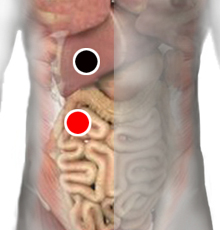

Creatinina alta
Pares
hígado - píloro
hígado - riñón (I)

Generalidades:
Creatinina resulta del metabolismo de la creatina, un compuesto que nutre los músculos y se elimina a través de los riñones. Los valores normales de la creatinina en sangre son:
Los síntomas más comunes son mareos, fatiga, dolor de cabeza, nausea o vómito, pérdida de peso, irritación de la piel, manos y pies hinchados, dolor al orinar.
Las causas más frecuentes de este trastorno son: